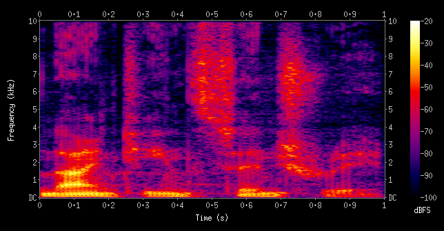

Research
Privacy and security of federated learning for 6G wireless systems, including non-terrestrial networks.
In federated learning, devices train a shared model without ever sending their raw data to a server. They send updates instead. My work asks what those updates can still reveal about the devices that produced them, and how a system can be built so that it leaks less.
The models I work with are tiny vision transformers, and the data they learn from is radio spectrograms.
What a spectrogram is

How the work is structured
-
Build a validated signal generator
Produce spectrograms whose behaviour can be checked against what the physics says it should be, so that everything built on top rests on data worth trusting.
-
Measure what shared updates reveal
With the data settled, ask what the updates devices send back can tell an observer about the devices themselves.
-
Test defences
Bring in the techniques meant to limit that leakage, and see how they behave in this particular setting rather than in the abstract.
-
Study outside eavesdroppers
Move the observer off the server and onto the wireless channel itself, where the updates are in transit.
This work is unpublished, so this page describes the shape of it and nothing more.
Tools and topics
- PyTorch
- Opacus
- NVIDIA Sionna
- Differential privacy
- Membership inference
- Participation inference
- Secure aggregation
- Robust aggregation
Where and with whom
IPT Lab, NUST School of Electrical Engineering and Computer Science, Islamabad.
Supervised by Prof. Syed Ali Hassan, with day-to-day supervision from Dr. Ali Zeeshan.